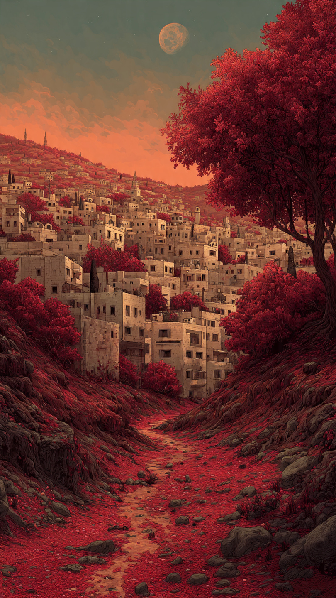

Massive Attack Star in Global Spotlight Over Palestine Demonstration

Robert Del Naja, a founding member of the iconic music group Massive Attack, has recently made headlines after being arrested during a pro-Palestine protest. The incident has attracted global attention, bringing together discussions about activism, freedom of expression, and political involvement of celebrities.
Robert Del Naja is widely known as a key member of Massive Attack, a band that revolutionized the music industry with its unique trip-hop sound. Beyond music, he has been actively involved in political and social causes, often using his platform to raise awareness about global issues.
Over the years, he has spoken out on topics such as human rights, climate change, and international conflicts. His involvement in activism has made him both admired and controversial.
The protest where Del Naja was arrested was part of a larger demonstration supporting Palestine. Protesters gathered to express their concerns over the ongoing conflict and to call for peace and justice.
During the demonstration, tensions reportedly increased, leading to intervention by law enforcement authorities. Several individuals, including Del Naja, were taken into custody.
News of the arrest quickly spread across social media and global news platforms. Supporters praised Del Naja for standing up for his beliefs, while others questioned the role of celebrities in political activism.
Media coverage has been extensive, with discussions focusing on both the protest itself and the broader issues surrounding the Palestine situation.
The incident has reignited debates about freedom of expression and the right to protest. Many argue that peaceful protests are a fundamental democratic right, while others stress the importance of maintaining public order.
Legal experts have also weighed in, discussing the boundaries of lawful protest and the responsibilities of participants.
The involvement of a well-known artist like Del Naja has brought attention to how musicians and entertainers engage with social issues. It highlights the growing trend of artists using their influence to address global concerns.
Some fans believe that such actions strengthen the connection between artists and their audience, while others feel it may affect their public image.
The protest is part of a wider wave of demonstrations happening across different countries. The Palestine issue continues to draw international attention, with people expressing their views through rallies, campaigns, and social media.
Governments and organizations worldwide are closely monitoring these developments, as they reflect broader public sentiment.
The arrest of Robert Del Naja during a protest is more than just a celebrity news story. It highlights important issues related to activism, freedom of speech, and global politics.
As discussions continue, this incident serves as a reminder of the powerful role individuals can play in shaping public discourse.
Special Offer